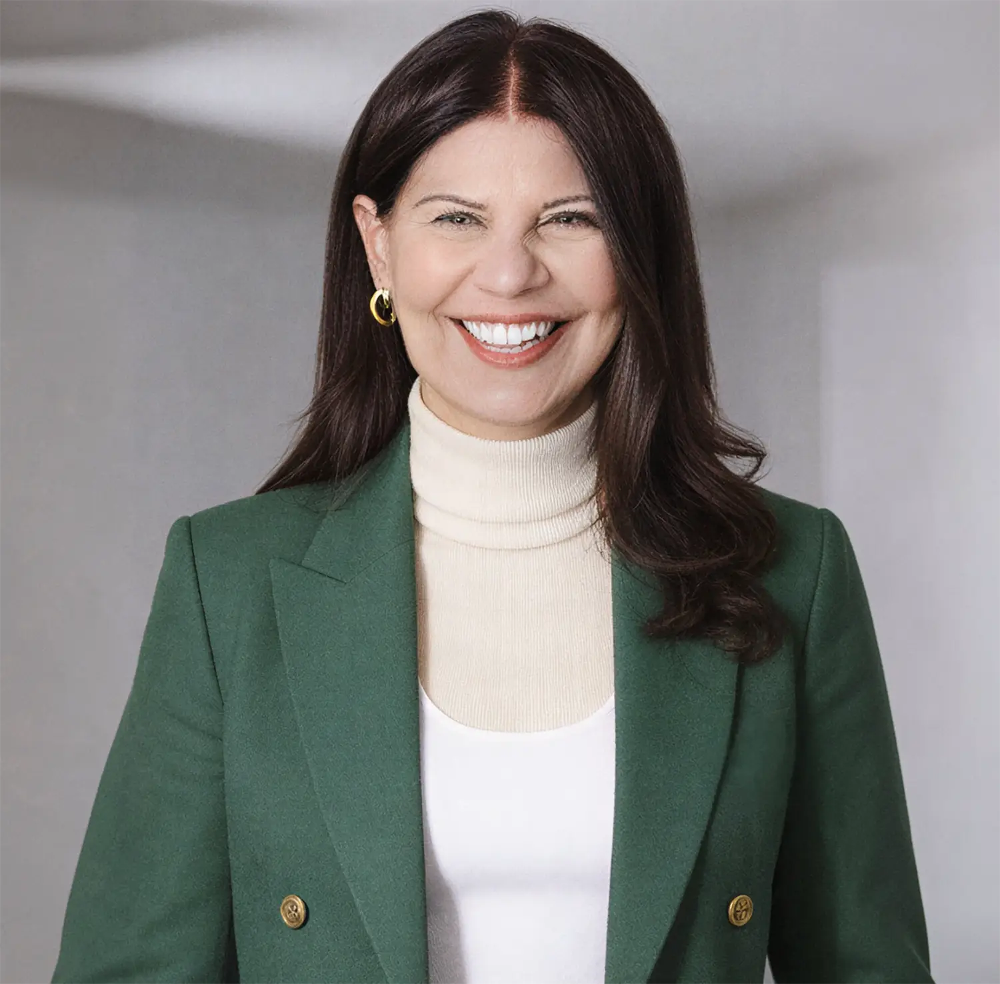
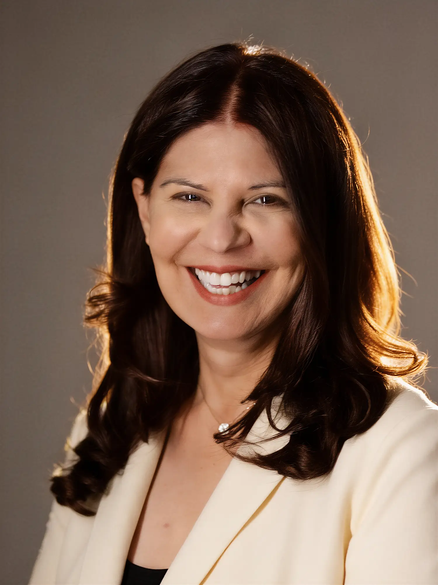

For twenty-five years, Ismat Duckson Aziz made those decisions at the top of five Fortune 500 companies, as the CHRO who also held responsibility for administration, communications, and enterprise strategy. Today she advises the CEOs, boards, and leaders facing the same calls.

Ismat Duckson Aziz is one of the most experienced human capital leaders in American business, and one of the quieter ones about it. Across five Fortune 500 CHRO roles, she sat in the rooms where the largest workforce decisions were made, and built a point of view there that she is only now beginning to share widely. Hear it from her directly.
Today that experience takes three forms: advising CEOs and executive teams, serving on boards, and teaching the next generation of leaders. Each one is a way to work with her.
Senior Advisor in McKinsey's global Transformation practice. She helps CEOs and executive teams lead large-scale, AI-era change without losing the workforce along the way.
Learn moreBoard director and Chartered Director (C.Dir.). She brings governance-level judgment on talent, compensation, and culture to boards deciding their company's next decade.
Learn moreInstructor and Executive in Residence at Duke's Fuqua School of Business. She is developing the next generation of CHROs and corporate directors.
Learn moreTell her what you are working on. If it is an advisory engagement, a board search, a stage, or a leader you are developing, she will tell you whether and how she can help.
Senior counsel to CEOs and executive teams on the people side of large-scale change, M&A integration, and AI adoption across a workforce. The work she does inside McKinsey's Transformation practice, brought directly to a leadership team.
Get StartedIndependent director and committee service, with real depth in compensation, succession, talent, and culture oversight. Chartered Director through McMaster's Directors College.
Get StartedTalks for leadership audiences on the modern CHRO, technology and the workforce, and leading people through transformation. Featured on the Gartner Talent Angle on how CHROs can shape enterprise technology strategy.
Get StartedWorking with rising HR leaders and aspiring directors, drawing on her teaching at Duke Fuqua and her residence with Woman Get On Board.
Get StartedMost transformations are designed on a spreadsheet and then run into the same wall: the people. Ismat has been the executive accountable for that wall, at companies with tens of thousands of employees and a workforce spread across geographies and union agreements.
As a Senior Advisor in McKinsey's global Transformation practice, she helps CEOs and executive teams move quickly without breaking the culture that makes the change stick, including how to bring AI into the organization in a way the workforce trusts.
Explore an engagement
She does not read about compensation, succession, and culture from the outside. She built and owned them as a Fortune 500 CHRO, and chaired compensation committees before joining boards as an independent voice.
Today she serves on the board of Homethrive and as a Corporate Director in Residence with Woman Get On Board, bringing an operator's instinct to the questions boards are most likely to get wrong.
Discuss a board roleThe people who will run human capital at the largest companies a decade from now are in classrooms and early board seats today. Ismat teaches them, as an Instructor and Executive in Residence at Duke's Fuqua School of Business and on the Dean's Advisory Board at Toronto's Rotman School.
Through Woman Get On Board, she helps prepare the next wave of corporate directors, a continuation of work she has done quietly throughout her career.
Invite Ismat to teach or speak